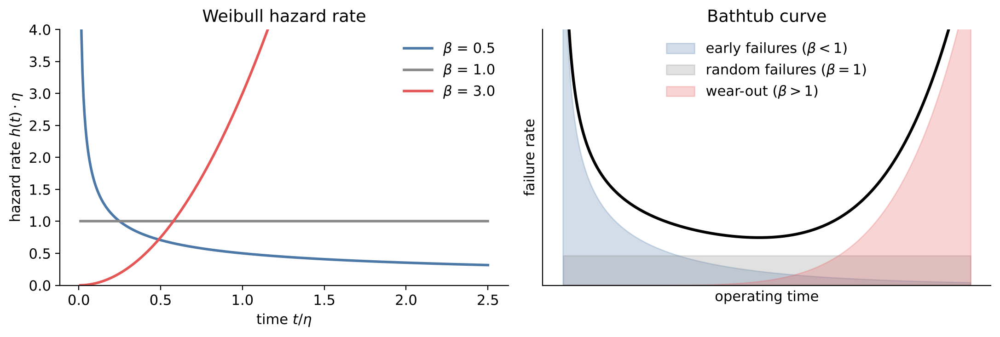
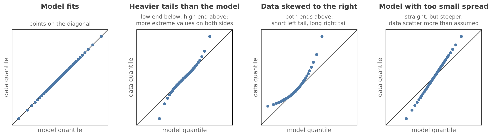
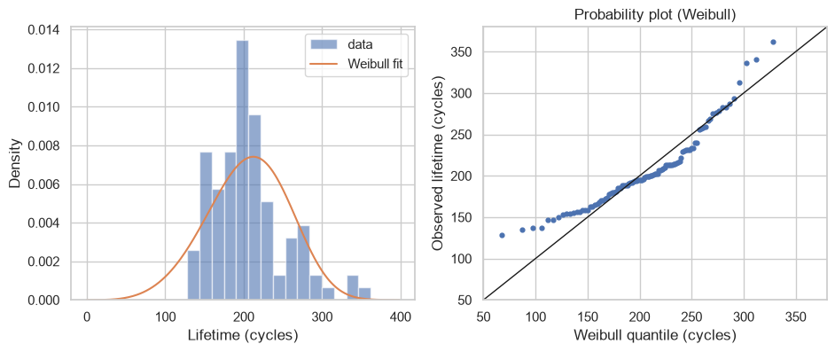
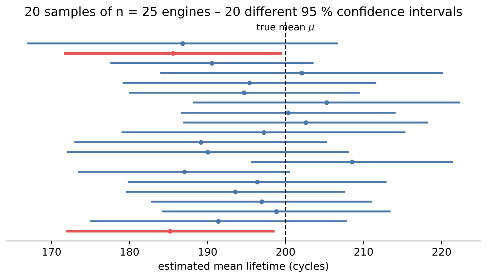
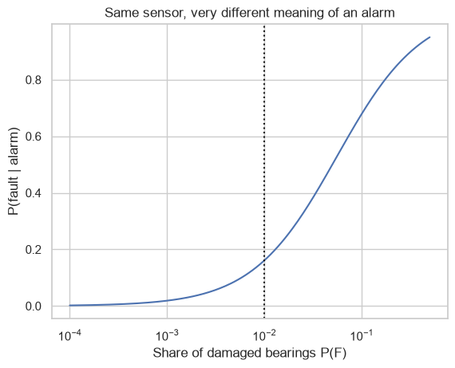
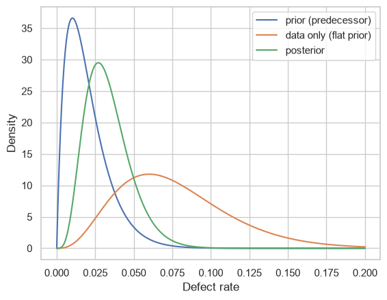

# Setup: works locally and in Google Colab
import numpy as np
import pandas as pd
import matplotlib.pyplot as plt
import seaborn as sns
from scipy import stats
sns.set_theme(style="whitegrid")4 Probability and Uncertainty
No two measurements are identical, no two components have the same lifetime, and every estimate computed from a sample would come out slightly differently with another sample. Engineers deal with this variability every day – in tolerances, safety factors, reliability targets and maintenance plans. Probability theory provides the language to describe it, and statistics provides the tools to quantify how certain our estimates are.
In this chapter we model the lifetimes of jet engines with a probability distribution, derive reliability figures such as the B10 life, and quantify the uncertainty of our estimates with confidence intervals – computed both with a classical formula and with the bootstrap. Finally we meet Bayes’ theorem, which tells us how to update probabilities when new information arrives.
Scenario: the replacement interval
You are the reliability engineer of an airline that operates a fleet of turbofan engines of one type. The airworthiness authority requires a maintenance programme in which, with 95 % confidence, at most 10 % of the engines reach a critical degradation state before they are taken off wing for overhaul. Your data: the complete run-to-failure histories of 100 engines of the same type. The fleet manager wants the interval as long as possible – every additional cycle on wing saves money.
Your decision: After how many flight cycles should engines be overhauled preventively?
Learning goals. After this chapter you can
- describe random quantities with probability density, distribution function, expected value and variance,
- choose suitable distributions for engineering data (normal, lognormal, Weibull, exponential),
- fit a distribution to lifetime data by maximum likelihood, check the fit with a probability plot and choose between candidate models,
- interpret the Weibull shape parameter in terms of failure behaviour and derive the B10 life,
- compute and correctly interpret confidence intervals, analytically and with the bootstrap,
- apply Bayes’ theorem to diagnostic alarms and explain the base rate effect,
- (extension) update prior knowledge with test data (beta–binomial model) and interpret a credible interval.
Datasets in this chapter
4.1 Random variables and distributions
Definition: Random variable, CDF, PDF and quantile function
A random variable \(X\) assigns a number to the outcome of a random experiment, e.g. the lifetime of a component. For a continuous random variable,
- the cumulative distribution function (CDF) \(F(x) = P(X \le x)\) gives the probability of a value up to \(x\),
- the probability density function (PDF) \(f(x) = F'(x)\) describes how probability is distributed,
- the probability of an interval follows from either of them: \(P(a < X \le b) = F(b) - F(a) = \int_a^b f(x)\,dx\). For a continuous random variable, a single value has probability 0, so it does not matter whether the limits are included,
- the quantile function \(F^{-1}(p)\) gives the value below which a share \(p\) of the distribution lies – the counterpart of the sample quantiles in Chapter 2; \(F^{-1}(0.5)\) is the median.
The expected value \(E[X] = \int x\,f(x)\,dx\) is the long-run average, the variance \(\text{Var}(X) = E[(X - E[X])^2]\) measures the spread.
A discrete random variable – a count such as the number of defects – takes only separate values \(k = 0, 1, 2, \dots\) Instead of a density, it has probabilities \(P(X = k)\), and sums replace the integrals; the CDF is defined in the same way.
In SciPy, every distribution offers these functions as pdf, cdf and ppf (percent point function, SciPy’s name for the quantile function). For a normal distribution with mean 0 and standard deviation 1, for example, stats.norm.cdf(1) - stats.norm.cdf(-1) gives \(P(-1 < X \le 1) \approx 0.68\), and stats.norm.ppf(0.975) gives 1.96.
In reliability engineering, \(X\) is the lifetime of a component, and the variable of the CDF is written \(t\) for time. The same CDF, \(F(t) = P(X \le t)\), is then the probability that the component has failed by time \(t\), and the reliability (survival function) \(R(t) = 1 - F(t) = P(X > t)\) is the probability that it is still working.
Choosing a distribution is a modelling decision, guided by physics and by the data:
| Distribution | Parameters | Typical use | Physical reasoning |
|---|---|---|---|
| Normal | \(\mu\), \(\sigma\) | measurement errors, machined dimensions | sum of many small independent effects |
| Lognormal | \(\mu\), \(\sigma\) of \(\ln X\) | fatigue life, particle sizes, repair times | product of many small independent effects |
| Weibull | shape \(\beta\), scale \(\eta\) | lifetimes, strength of brittle materials | “weakest link”: the first of many flaws fails |
| Exponential | rate \(\lambda\) | random failures, times between events | constant failure rate, no memory |
| Poisson | rate \(\lambda\) | number of defects per unit or per time | rare independent events |
Figure 4.1 shows their typical shapes. The Weibull distribution – probably the least familiar of them, but the most important one for lifetimes – is explained in detail in the next section.

The prominence of the normal distribution is explained by one of the most important results of probability theory:
Theorem: Central limit theorem
Let \(X_1, \dots, X_n\) be independent random variables with the same distribution, mean \(\mu\) and finite variance \(\sigma^2\). Then the distribution of the sample mean \(\bar X_n\) approaches a normal distribution with mean \(\mu\) and standard deviation \(\sigma/\sqrt{n}\) as \(n\) grows – whatever the distribution of the \(X_i\).
Two consequences matter for engineers. First, the uncertainty of a mean decreases with \(1/\sqrt{n}\) – four times as many measurements halve the uncertainty.
Second, the theorem explains why so many measured quantities are approximately normal – with one refinement. As stated, it requires identically distributed \(X_i\): exactly the situation of a sample mean, but not of a machined diameter, which results from many different effects such as tool wear, temperature, clamping and material. Generalisations of the theorem (by Lindeberg and Lyapunov) show that such a sum is still approximately normal if the effects are independent and none of them dominates. This condition also tells us when to expect deviations: if a single large effect dominates – a worn tool, two different machine settings – the distribution takes on its shape and can be skewed or have two peaks.
4.1.1 Live coding: sums and products of many effects
Two simulated quantities make the difference visible. Both result from the same ten small, independent effects, which are uniformly distributed – flat, not bell-shaped – and of different size, none of them dominating. For the diameter of a turned shaft, the effects are added to the nominal value of 25 mm as a few micrometres each. For the fatigue life of a component, the same effects act as factors between about 0.6 and 1.4 on a nominal life of 100,000 cycles.
rng = np.random.default_rng(1)
n = 100_000 # number of simulated parts
# Ten independent effects per part: uniformly distributed between -1 and 1 (not normal!).
u = rng.uniform(-1, 1, size=(n, 10)) # n rows (parts) x 10 columns (effects)
width = np.linspace(1, 5, 10) # different sizes of the effects, none dominates
diameter = 25.0 + (0.001 * width * u).sum(axis=1) # additive: 25 mm PLUS effects of 1-5 µm
life = 1e5 * (1 + 0.08 * width * u).prod(axis=1) # multiplicative: 100,000 cycles TIMES factors
print(f"Fatigue life: mean {life.mean():,.0f}, median {np.median(life):,.0f} cycles")
fig, axes = plt.subplots(1, 3, figsize=(13, 3.5))
sns.histplot(diameter, bins=80, ax=axes[0])
axes[0].set(title="Sum: diameter (mm)")
sns.histplot(life / 1000, bins=80, ax=axes[1]) # in thousands of cycles
axes[1].set(title="Product: fatigue life (1,000 cycles)")
sns.histplot(np.log(life), bins=80, ax=axes[2])
axes[2].set(title="Product on a log scale: ln(life)")
plt.tight_layout(); plt.show()Fatigue life: mean 99,960, median 89,547 cycles
Discussion. Although every single effect is flat, the sum of ten of them is practically normal: the diameter scatters symmetrically by a few micrometres around 25 mm. The same effects, applied as factors, give a right-skewed fatigue life: half of the components reach between about 64,000 and 125,000 cycles, a few far more, and the mean lies clearly above the median. On a logarithmic scale, the product becomes a sum again, \(\ln X = \ln Z_1 + \dots + \ln Z_n\), and the histogram is normal: the life is lognormally distributed.
In practice, the question is therefore whether the effects shift a quantity by a fixed amount or change it by a percentage. Machining errors add micrometres; surface quality or stress level shorten a fatigue life by a factor, and each grinding step breaks a particle into a random fraction of its size. Multiplicative quantities are always positive and right-skewed, and their spread is relative (“±30 %”): large values scatter more than small ones. On a logarithmic scale they become normal – this is why the log transformation helped for the skewed energy data in Chapter 2.
4.2 The Weibull distribution for lifetimes
The two-parameter Weibull distribution has the CDF and the hazard rate (instantaneous failure rate of the survivors)
\[F(t) = 1 - \exp\left[-\left(\frac{t}{\eta}\right)^{\beta}\right], \qquad h(t) = \frac{f(t)}{R(t)} = \frac{\beta}{\eta}\left(\frac{t}{\eta}\right)^{\beta - 1}.\]
Where does \(h(t)\) come from? Of the units still working at time \(t\), a share
\[P(t < X \le t + \Delta t \mid X > t) = \frac{F(t + \Delta t) - F(t)}{R(t)} \approx \frac{f(t)\,\Delta t}{R(t)}\]
fails in a short interval \(\Delta t\). Per unit of time, this is \(h(t) = f(t)/R(t)\). The density \(f(t)\) refers to all units at the start, the hazard rate to the survivors. Example: of 1,000 lamps, 800 still work after 100 hours, and 5 fail in the next hour. Then \(f \approx 5/1000 = 0.5\,\%\) per hour, but \(h \approx 5/800 \approx 0.63\,\%\) per hour. For maintenance, \(h\) is the relevant quantity: it tells how risky the next hour is for a unit that is still running.
The scale parameter \(\eta\) is the characteristic life: by \(t = \eta\), 63.2 % of all units have failed, regardless of \(\beta\). The shape parameter \(\beta\) determines how the failure rate changes over time:
Interpretation of the Weibull shape parameter
- \(\beta < 1\): decreasing failure rate – early failures (manufacturing defects, infant mortality).
- \(\beta = 1\): constant failure rate – random failures; the Weibull becomes the exponential distribution.
- \(\beta > 1\): increasing failure rate – wear-out (fatigue, corrosion, abrasion). \(\beta \approx 3.5\) gives a nearly symmetric distribution.
Together, the three regimes form the well-known bathtub curve of a product’s life.

The shape parameter has direct consequences for maintenance: preventive replacement only makes sense if the failure rate increases (\(\beta > 1\)). With \(\beta \le 1\), a new part is not more reliable than an old one, and replacing it early wastes money.
A frequently used reliability figure is the B10 life: the time by which 10 % of the units have failed, i.e. \(F(B_{10}) = 0.1\). Solving the Weibull CDF gives
\[B_{10} = \eta\,\left(-\ln 0.9\right)^{1/\beta}.\]
4.2.1 Estimating parameters: maximum likelihood
Definition: Maximum likelihood estimation (MLE)
Given independent observations \(x_1, \dots, x_n\) and a model with density \(f(x;\theta)\), the likelihood \(L(\theta) = \prod_i f(x_i;\theta)\) measures how plausible the data are for a parameter value \(\theta\). The maximum likelihood estimate \(\hat\theta\) maximises \(L\), in practice its logarithm \(\ell(\theta) = \sum_i \ln f(x_i;\theta)\).
For the normal distribution, MLE leads to the familiar mean and (biased) standard deviation. For the Weibull distribution, there is no closed-form solution; scipy.stats.weibull_min.fit maximises the likelihood numerically.
To check whether the fitted distribution describes the data, we use a probability plot, also called a Q–Q plot (quantile–quantile plot). It compares the data with the model point by point, in three steps:
- Sort the \(n\) observations. The \(i\)-th smallest value has a share of about \(p_i = (i - 0.5)/n\) of the data below it – every observation is an empirical quantile. (The \(-0.5\) places each value in the middle of its share \(1/n\) and avoids \(p = 1\), whose model quantile would be infinite.)
- For the same shares, compute the quantiles of the fitted distribution, \(F^{-1}(p_i)\) – in SciPy with
ppf. - Plot each pair: the model quantile on the x-axis, the observed value on the y-axis.
If the model fits, every observed quantile is close to the model quantile, and the points lie on the diagonal \(y = x\). Typical deviations have typical shapes (Figure 4.3). They matter most at the ends: a histogram shows the tails only vaguely, the Q–Q plot shows every single value – and the lower tail is exactly where reliability figures such as the B10 life are decided.

4.3 Live coding: lifetimes of turbofan engines
C-MAPSS (Commercial Modular Aero-Propulsion System Simulation) is a NASA simulation of a large turbofan engine. The dataset contains run-to-failure trajectories of a fleet of engines with different initial wear and manufacturing variation. In the training file train_FD001.txt, every one of the 100 engines runs until failure, so the last recorded cycle of each engine is its lifetime (in flight cycles). We will use the sensor data of the same file in Chapter 12.
Data access. The cell below downloads CMAPSSData.zip (about 12 MB) from the NASA Open Data Portal once and extracts it into the folder data/CMAPSSData/.
from pathlib import Path
import zipfile, io, requests
def cmapss_dir(root=Path("data")):
"""Download and extract the NASA C-MAPSS data once; return the folder with train_FD001.txt."""
root.mkdir(exist_ok=True)
target = root / "CMAPSSData"
if not any(target.rglob("train_FD001.txt")):
zip_path = root / "CMAPSSData.zip"
if not zip_path.exists():
r = requests.get("https://data.nasa.gov/docs/legacy/CMAPSSData.zip", timeout=300)
r.raise_for_status()
zip_path.write_bytes(r.content)
with zipfile.ZipFile(zip_path) as z:
z.extractall(target)
for inner in list(target.rglob("*.zip")): # some versions contain a nested zip
zipfile.ZipFile(inner).extractall(inner.parent)
return next(target.rglob("train_FD001.txt")).parent
CMAPSS = cmapss_dir()
cols = ["unit", "cycle", "op1", "op2", "op3"] + [f"s{i}" for i in range(1, 22)]
train = pd.read_csv(CMAPSS / "train_FD001.txt", sep=r"\s+", header=None, names=cols)
lifetimes = train.groupby("unit")["cycle"].max()
lifetimes.describe().round(1)count 100.0
mean 206.3
std 46.3
min 128.0
25% 177.0
50% 199.0
75% 229.2
max 362.0
Name: cycle, dtype: float64beta, loc, eta = stats.weibull_min.fit(lifetimes, floc=0)
print(f"Weibull fit: shape beta = {beta:.2f}, scale eta = {eta:.1f} cycles")
fig, axes = plt.subplots(1, 2, figsize=(11, 4))
t = np.linspace(0, lifetimes.max() * 1.1, 300)
axes[0].hist(lifetimes, bins=15, density=True, alpha=0.6, label="data")
axes[0].plot(t, stats.weibull_min.pdf(t, beta, scale=eta), label="Weibull fit")
axes[0].set(xlabel="Lifetime (cycles)", ylabel="Density"); axes[0].legend()
# Probability plot in three steps
n = len(lifetimes)
p = (np.arange(1, n + 1) - 0.5) / n # 1. share below the i-th smallest value
model_q = stats.weibull_min.ppf(p, beta, scale=eta) # 2. quantiles of the fitted Weibull distribution
axes[1].scatter(model_q, np.sort(lifetimes), s=12) # 3. model quantile vs. observed lifetime
axes[1].axline((0, 0), slope=1, color="k", lw=1) # diagonal y = x: perfect fit
axes[1].set(xlim=(50, 380), ylim=(50, 380)) # same range on both axes
axes[1].set(xlabel="Weibull quantile (cycles)", ylabel="Observed lifetime (cycles)",
title="Probability plot (Weibull)")
plt.show()Weibull fit: shape beta = 4.41, scale eta = 225.0 cycles
Discussion. We fixed the location parameter at zero (floc=0), i.e. we use the two-parameter Weibull distribution. The estimated shape parameter is clearly larger than 1 – the engines show wear-out behaviour, as expected for a degradation simulation. In the probability plot, the points follow the diagonal in the middle. At the lower end, they lie clearly above it: the shortest observed lifetime is 128 cycles, whereas the fitted model expects about 68 cycles for the shortest of 100 engines. The data contain fewer early failures than the Weibull model – in the lower tail, which determines the B10 life, the model is on the safe side. At the upper end, the points lie above the diagonal, too: a few engines live longer than the nearly symmetric Weibull distribution (\(\beta \approx 4.4\)) allows.
Note that no engine fails very early: the shortest lifetime is well above zero. A three-parameter Weibull distribution with a failure-free time (location parameter \(t_0 > 0\)) could describe this better – the next section compares it with other candidates.
b10 = stats.weibull_min.ppf(0.10, beta, scale=eta)
print(f"B10 life from the fit: {b10:.0f} cycles")
print(f"B10 from the formula: {eta * (-np.log(0.9)) ** (1 / beta):.0f} cycles")
print(f"Empirical 10 % quantile: {lifetimes.quantile(0.10):.0f} cycles")B10 life from the fit: 135 cycles
B10 from the formula: 135 cycles
Empirical 10 % quantile: 155 cycles4.3.1 Which distribution? A model decision
The B10 life of the fitted model, 135 cycles, is clearly lower than the empirical 10 % quantile of 155 cycles – the consequence of the misfit in the lower tail. Since the B10 life decides the overhaul interval, the choice of the distribution matters. We compare four candidates: the two-parameter Weibull distribution, a three-parameter Weibull distribution with a failure-free time \(t_0\) – no failures before \(t_0\), \(F(t) = 1 - \exp\left[-\left((t - t_0)/\eta\right)^{\beta}\right]\) for \(t > t_0\) –, the lognormal and the normal distribution.
Besides the Q–Q plots, we compare the candidates with a single number:
Definition: Akaike information criterion (AIC)
A model with more parameters can adapt more closely to the data, so its maximised log-likelihood \(\ell(\hat\theta)\) is almost always higher – even if the extra parameter only fits noise. The AIC therefore adds a penalty for each of the \(k\) fitted parameters: \[\mathrm{AIC} = 2k - 2\,\ell(\hat\theta).\] Smaller is better, and only differences between models fitted to the same data are meaningful. Rule of thumb (Burnham and Anderson): models less than 2 above the best AIC are about equally well supported, models more than 10 above have essentially no support. The same idea – goodness of fit minus a penalty for complexity – returns as the adjusted \(R^2\) in Chapter 5.
AIC only ranks the candidates; it does not show that any of them fits. Always look at the Q–Q plot, too. (Distance measures such as the Kolmogorov–Smirnov statistic or the Anderson–Darling statistic, which emphasises the tails, compare the empirical and the fitted CDF directly.)
# Four candidate models, each fitted by maximum likelihood. fit() returns the parameters
# as a tuple; *params passes them on to ppf one by one. The last entry is the number k of
# fitted parameters for the AIC (a location fixed with floc=0 is not fitted, so it does not count).
candidates = [
("Weibull (2 parameters)", stats.weibull_min, stats.weibull_min.fit(lifetimes, floc=0), 2),
("Weibull (3 parameters)", stats.weibull_min, stats.weibull_min.fit(lifetimes), 3), # free t0
("lognormal", stats.lognorm, stats.lognorm.fit(lifetimes, floc=0), 2),
("normal", stats.norm, stats.norm.fit(lifetimes), 2),
]
n = len(lifetimes)
p = (np.arange(1, n + 1) - 0.5) / n # shares, as in the probability plot above
fig, axes = plt.subplots(1, 4, figsize=(16, 4))
for ax, (name, dist, params, k) in zip(axes, candidates):
ax.scatter(dist.ppf(p, *params), np.sort(lifetimes), s=10) # model quantile vs. observed
ax.axline((0, 0), slope=1, color="k", lw=1) # diagonal y = x
ax.set(xlim=(50, 380), ylim=(50, 380), title=name, xlabel="model quantile (cycles)")
loglik = dist.logpdf(lifetimes, *params).sum() # maximised log-likelihood
print(f"{name:23s} B10 = {dist.ppf(0.10, *params):3.0f} cycles AIC = {2 * k - 2 * loglik:6.1f}")
axes[0].set_ylabel("observed lifetime (cycles)")
plt.tight_layout(); plt.show()
print(f"Empirical 10 % quantile: {lifetimes.quantile(0.10):.0f} cycles")
beta3, t0, eta3 = candidates[1][2] # parameters of the 3-parameter Weibull
print(f"3-parameter Weibull: shape {beta3:.2f}, failure-free time t0 = {t0:.0f}, scale {eta3:.0f} cycles")Weibull (2 parameters) B10 = 135 cycles AIC = 1065.5
Weibull (3 parameters) B10 = 152 cycles AIC = 1039.0
lognormal B10 = 154 cycles AIC = 1038.9
normal B10 = 147 cycles AIC = 1054.0
Empirical 10 % quantile: 155 cycles
3-parameter Weibull: shape 1.83, failure-free time t0 = 125, scale 91 cyclesDiscussion. Three criteria lead to a decision:
- Fit where it matters. The B10 life is decided in the lower tail. There, the two-parameter Weibull and, to a lesser extent, the normal distribution deviate from the diagonal. The three-parameter Weibull and the lognormal distribution follow the data closely, and their B10 lives (152 and 154 cycles) agree with the empirical 10 % quantile (155 cycles). The AIC confirms the picture: the three-parameter Weibull and the lognormal distribution are practically tied (1039.0 and 1038.9), the normal distribution (1054.0) and the two-parameter Weibull distribution (1065.5) are far behind. Between the two good candidates, statistics cannot decide.
- Physics. In C-MAPSS, the engines degrade gradually from a small initial wear; a failure needs time to develop. A failure-free time is therefore plausible: the three-parameter Weibull distribution estimates \(t_0 \approx 125\) cycles, and indeed no engine failed before cycle 128. Its shape parameter, \(\beta \approx 1.8\), still indicates wear-out after \(t_0\).
- Consequences. The choice is worth about 17 cycles of B10 – more than 10 % of the overhaul interval. That two well-fitting models agree gives confidence; the poorly fitting two-parameter model would be needlessly conservative.
We therefore use the three-parameter Weibull distribution from now on. A model with one more parameter always fits at least as well. Here the extra parameter is justified: the gain in likelihood is far larger than the AIC penalty, the parameter has a physical meaning, and it changes the result substantially.1
4.4 Confidence intervals
The mean lifetime we computed is an estimate from 100 engines. Another fleet of 100 engines would give a somewhat different value. A confidence interval quantifies this sampling uncertainty.
Definition: Confidence interval
A 95 % confidence interval is computed from the data by a procedure that, if the experiment were repeated many times, would contain the true parameter in 95 % of the repetitions.
For the mean, the central limit theorem provides such a procedure. The sample mean \(\bar X\) is approximately normal around the true mean \(\mu\), with standard deviation \(\sigma/\sqrt n\) – the standard error of the mean. For a normal distribution, 95 % of the values lie within \(\pm 1.96\) standard deviations of the mean (1.96 is the 97.5 % quantile computed above). So in 95 % of all samples, \(\bar x\) lies within \(\pm 1.96\,\sigma/\sqrt n\) of \(\mu\). Turned around: in 95 % of all samples, the interval \(\bar x \pm 1.96\,\sigma/\sqrt n\) contains \(\mu\).
In practice, \(\sigma\) is unknown and replaced by the sample standard deviation \(s\). This adds uncertainty: in a small sample, \(s\) may by chance come out too small, and the interval would be too narrow. The t-distribution accounts for this. It was published in 1908 by W. S. Gosset, a chemist at the Guinness brewery, under the pseudonym “Student”. For normal data, the standardised mean \((\bar X - \mu)/(s/\sqrt n)\) follows a t-distribution: bell-shaped like the standard normal distribution, but with heavier tails. Its shape is controlled by the degrees of freedom \(n - 1\) – one less than \(n\), because \(s\) measures the spread around the mean estimated from the same data (the reason why pandas’ std() divides by \(n - 1\)). With growing \(n\), the t-distribution approaches the standard normal distribution:
| sample size \(n\) | 5 | 10 | 30 | 100 | \(\infty\) |
|---|---|---|---|---|---|
| 97.5 % quantile \(t_{n-1,\,0.975}\) | 2.78 | 2.26 | 2.05 | 1.98 | 1.96 |
Confidence interval for the mean
\[\bar x \pm t_{n-1,\,0.975}\,\frac{s}{\sqrt n}\] The interval is exact for normally distributed data. For other distributions it is approximately valid if \(n\) is large enough for the central limit theorem – the more skewed the data, the larger \(n\) must be.

Pitfall: what a confidence interval does not say
A computed interval, say [197.1, 215.5] cycles, does not contain the true mean “with 95 % probability” – in the classical view, the true mean is fixed and either inside or not. The 95 % refers to the reliability of the method. A correct statement is: “The interval [197.1, 215.5] cycles was computed with a method that captures the true mean in 95 % of all samples.” A probability statement about the parameter itself requires the Bayesian approach – the credible interval in the extension at the end of this chapter. Also, a confidence interval for the mean says nothing about the spread of individual lifetimes: most single engines lie far outside it.
For many quantities – the B10 life, a median, a ratio – there is no simple formula for the interval. The bootstrap solves this by simulation:
Definition: Bootstrap
Draw \(B\) (e.g. 10,000) samples of size \(n\) with replacement from the observed data and compute the statistic of interest for each. The distribution of these bootstrap replicates approximates the sampling distribution of the statistic; its 2.5 % and 97.5 % quantiles give an approximate 95 % confidence interval (percentile method; SciPy uses the refined BCa method by default).
n = len(lifetimes) # number of engines
x_bar = lifetimes.mean() # sample mean
se = lifetimes.std() / np.sqrt(n) # standard error s / sqrt(n); std() uses n - 1
t_q = stats.t.ppf(0.975, df=n - 1) # 97.5 % quantile of the t-distribution
ci_t = (x_bar - t_q * se, x_bar + t_q * se) # shortcut: stats.t.interval(0.95, df=n - 1, loc=x_bar, scale=se)
boot = stats.bootstrap((lifetimes.values,), np.mean, confidence_level=0.95,
random_state=0) # bootstrap interval for comparison
print(f"Mean lifetime: {x_bar:.1f} cycles, standard error: {se:.2f} cycles, t-quantile: {t_q:.3f}")
print("t-interval: ", np.round(ci_t, 1))
print("bootstrap interval:", np.round(boot.confidence_interval, 1))Mean lifetime: 206.3 cycles, standard error: 4.63 cycles, t-quantile: 1.984
t-interval: [197.1 215.5]
bootstrap interval: [197.9 215.8]Discussion. For the mean of 100 observations both methods give almost the same interval – the central limit theorem makes the t-interval reliable here. The bootstrap becomes valuable for statistics without a known formula (Exercise 2) and for small or strongly skewed samples.
4.5 Back to the decision
The requirement “at most 10 % failures with 95 % confidence” has two parts. The 10 % defines the B10 life. The 95 % confidence means that we must not use the point estimate of B10 but a value that is, with 95 % confidence, below the true B10 – the lower bound of a one-sided 95 % confidence interval, which we obtain with the bootstrap, using the three-parameter Weibull model chosen above. And preventive overhaul only makes sense if the failure rate increases with age, i.e. \(\beta > 1\).
def b10_of(x):
"""B10 life of a three-parameter Weibull distribution fitted to the lifetimes x."""
c, loc, scale = stats.weibull_min.fit(x)
return stats.weibull_min.ppf(0.10, c, loc=loc, scale=scale)
b10_3p = b10_of(lifetimes.values)
boot_b10 = stats.bootstrap((lifetimes.values,), b10_of, n_resamples=1000, confidence_level=0.90,
method="percentile", random_state=1) # takes a few seconds
b10_lower = boot_b10.confidence_interval.low # lower end of a 90 % two-sided = 95 % one-sided bound
print(f"Weibull shape beta = {beta3:.2f} -> {'wear-out: preventive overhaul is sensible' if beta3 > 1 else 'no wear-out: preventive overhaul does not help'}")
print(f"B10 point estimate: {b10_3p:.0f} cycles, 95 % lower confidence bound: {b10_lower:.1f} cycles")
print(f"Decision: overhaul after {int(np.floor(b10_lower))} flight cycles at the latest.")Weibull shape beta = 1.83 -> wear-out: preventive overhaul is sensible
B10 point estimate: 152 cycles, 95 % lower confidence bound: 147.6 cycles
Decision: overhaul after 147 flight cycles at the latest.The difference between the point estimate and the lower bound is the price of having data from only 100 engines – more data would allow a longer interval. The model decision was worth even more: with the two-parameter Weibull model, the same procedure gives a bound of only about 128 cycles. In the real world, the decision would also consider that C-MAPSS is a simulation: before an interval is approved, the model would have to be validated against field data of real engines.
4.6 Bayes’ theorem: how much should we trust an alarm?
So far we have treated probabilities as long-run frequencies. Conditional probabilities describe how the probability of an event changes when we know that another event has occurred.
Theorem: Bayes’ theorem
For events \(F\) and \(A\) with \(P(A) > 0\): \[P(F \mid A) = \frac{P(A \mid F)\,P(F)}{P(A)} = \frac{P(A \mid F)\,P(F)}{P(A \mid F)\,P(F) + P(A \mid \bar F)\,P(\bar F)}.\] \(P(F)\) is the prior probability, \(P(F \mid A)\) the posterior probability after observing \(A\).
Example: a condition monitoring system detects a bearing fault \(F\) with probability \(P(A \mid F) = 0.95\) (sensitivity) and raises a false alarm on a healthy bearing with probability \(P(A \mid \bar F) = 0.05\). Only 1 % of the monitored bearings are actually damaged. If the system raises an alarm \(A\), how likely is a real fault?
\[P(F \mid A) = \frac{0.95 \cdot 0.01}{0.95 \cdot 0.01 + 0.05 \cdot 0.99} \approx 0.16\]
Five out of six alarms are false – not because the system is bad, but because faults are rare.
Pitfall: base rate neglect
Intuition tends to confuse \(P(A \mid F)\) (“the system detects 95 % of all faults”) with \(P(F \mid A)\) (“95 % of all alarms are real”). When the base rate \(P(F)\) is small, the two differ dramatically. This effect returns in Chapter 7 as the precision of a classifier.
sens, false_alarm = 0.95, 0.05
prevalence = np.logspace(-4, -0.3, 200)
posterior = sens * prevalence / (sens * prevalence + false_alarm * (1 - prevalence))
plt.semilogx(prevalence, posterior)
plt.axvline(0.01, ls=":", c="k")
plt.xlabel("Share of damaged bearings P(F)"); plt.ylabel("P(fault | alarm)")
plt.title("Same sensor, very different meaning of an alarm")
plt.show()
4.7 Extension: Bayesian estimation with prior knowledge
Extension – optional material, not required for the exam.
Classical (frequentist) statistics uses only the current data. Bayesian statistics treats an unknown parameter \(\theta\) itself as uncertain, describes the knowledge before the experiment by a prior distribution and updates it with the data to a posterior distribution:
\[p(\theta \mid \text{data}) \propto p(\text{data} \mid \theta)\; p(\theta).\]
This is attractive in engineering, where tests are expensive but experience from predecessor products exists. Example: a new product variant is tested, 3 of 50 parts are defective. From the predecessor product we know a defect rate of about 2 %.
For a proportion, the beta distribution is a convenient prior: with prior \(\text{Beta}(a, b)\) and \(k\) defects in \(n\) parts, the posterior is again a beta distribution, \(\text{Beta}(a + k,\; b + n - k)\). (We write \(a, b\) for the beta parameters to avoid confusion with the Weibull shape \(\beta\).) The prior mean is \(a/(a+b)\), so \(\text{Beta}(2, 98)\) has mean \(2/(2+98) = 2\,\%\) and carries roughly the weight of 100 previously inspected parts.
k, n = 3, 50 # new tests: defects, parts
a0, b0 = 2, 98 # prior from the predecessor product
a1, b1 = a0 + k, b0 + n - k # posterior
p = np.linspace(0, 0.20, 500)
plt.plot(p, stats.beta.pdf(p, a0, b0), label="prior (predecessor)")
plt.plot(p, stats.beta.pdf(p, 1 + k, 1 + n - k), label="data only (flat prior)")
plt.plot(p, stats.beta.pdf(p, a1, b1), label="posterior")
plt.xlabel("Defect rate"); plt.ylabel("Density"); plt.legend()
plt.show()
ci_freq = stats.binomtest(k, n).proportion_ci(0.95)
print(f"Frequentist: {k/n:.1%}, 95 % CI [{ci_freq.low:.1%}, {ci_freq.high:.1%}]")
lo, hi = stats.beta.interval(0.95, a1, b1)
print(f"Bayesian: {a1/(a1+b1):.1%}, 95 % credible interval [{lo:.1%}, {hi:.1%}]")
Frequentist: 6.0%, 95 % CI [1.3%, 16.5%]
Bayesian: 3.3%, 95 % credible interval [1.1%, 6.7%]Discussion. The posterior lies between prior and data: the new tests suggest a higher defect rate than the predecessor, but 50 parts are not enough to overrule the experience from 100 parts completely. The Bayesian credible interval has the intuitive interpretation that the classical confidence interval lacks: given prior and data, the defect rate lies in this interval with 95 % probability. The price is that the result depends on the prior – which must therefore be justified and documented. Whether the predecessor is really comparable is an engineering judgement, not a statistical one.
Key takeaways
- Distributions are modelling choices; physics (sum, product, weakest link) guides the choice, probability plots check it – and the choice can change the decision.
- The Weibull shape parameter distinguishes early failures, random failures and wear-out – and decides whether preventive maintenance makes sense.
- Confidence intervals quantify the uncertainty of an estimate; the bootstrap provides them for almost any statistic.
- Bayes’ theorem: with rare events, even good detectors produce mostly false alarms.
4.8 Exercises
- Repeat the decision of Back to the decision with the lognormal model: compute its B10 life and the 95 % lower confidence bound. How much does the overhaul interval depend on the choice between the two well-fitting models?
- Use the bootstrap to compute a 95 % confidence interval for the B10 life. Why is it wider (relative to the estimate) than the interval for the mean?
- How does the width of the confidence interval of the mean change if only 20 engines are available? Simulate it by drawing many random subsamples of 20 engines.
- Interpret the shape parameter for the maintenance strategy: does preventive replacement make sense? At which age would you replace an engine if at most 5 % of the engines may fail before replacement?
- The fault share in a well-maintained fleet is only 0.1 %. How reliable is an alarm of the monitoring system above? Which false alarm rate would be needed to reach \(P(F \mid A) = 50\,\%\)?
- (Extension) Repeat the defect-rate analysis with a weak prior Beta(0.2, 9.8) and a strong prior Beta(20, 980). When does the prior dominate, when the data?
4.8.1 Solutions
Solution to Exercise 1
def b10_lognormal(x):
"""B10 life of a lognormal distribution fitted to the lifetimes x."""
s, loc, scale = stats.lognorm.fit(x, floc=0)
return stats.lognorm.ppf(0.10, s, loc=loc, scale=scale)
boot_ln = stats.bootstrap((lifetimes.values,), b10_lognormal, n_resamples=1000, confidence_level=0.90,
method="percentile", random_state=1)
print(f"lognormal: B10 {b10_lognormal(lifetimes.values):.0f} cycles, 95 % lower bound {boot_ln.confidence_interval.low:.0f} cycles")
print(f"3-p Weibull: B10 {b10_3p:.0f} cycles, 95 % lower bound {b10_lower:.0f} cycles")lognormal: B10 154 cycles, 95 % lower bound 148 cycles
3-p Weibull: B10 152 cycles, 95 % lower bound 148 cyclesBoth well-fitting models give practically the same B10 life (152 and 154 cycles) and the same lower bound of about 148 cycles: here the decision does not depend on the choice between them – only on avoiding the poorly fitting two-parameter model. If two plausible models led to clearly different intervals, the more conservative one would be the safer choice, and the difference should be reported as model uncertainty.
Solution to Exercise 2
# b10_of (three-parameter Weibull) is defined in "Back to the decision"
boot_95 = stats.bootstrap((lifetimes.values,), b10_of, n_resamples=1000,
method="percentile", random_state=0)
lo, hi = boot_95.confidence_interval
print(f"B10 = {b10_3p:.0f} cycles, 95 % CI [{lo:.0f}, {hi:.0f}] (relative width {(hi - lo) / b10_3p:.0%})")
print(f"Mean: relative width {(ci_t[1] - ci_t[0]) / lifetimes.mean():.0%}")B10 = 152 cycles, 95 % CI [147, 164] (relative width 12%)
Mean: relative width 9%The B10 life is a statement about the lower tail of the distribution, where only about 10 of the 100 engines contribute information. In addition, it depends on three estimated parameters, and the shape parameter enters as an exponent. The mean uses all observations equally. Reliability figures in the tails are therefore more uncertain than averages – the further out in the tail (B1 instead of B10), the more so. This is one reason for safety factors.
Solution to Exercise 3
rng = np.random.default_rng(0) # random generator with fixed seed
widths = [] # interval widths of all subsamples
for _ in range(2000): # 2000 random fleets of 20 engines
sub = rng.choice(lifetimes.values, size=20, replace=False)
lo_, hi_ = stats.t.interval(0.95, df=19, loc=sub.mean(), scale=stats.sem(sub)) # sem = s / sqrt(n)
widths.append(hi_ - lo_)
print(f"n = 100: width {ci_t[1] - ci_t[0]:.1f} cycles")
print(f"n = 20: mean width {np.mean(widths):.1f} cycles (ratio {np.mean(widths) / (ci_t[1] - ci_t[0]):.2f})")n = 100: width 18.4 cycles
n = 20: mean width 42.6 cycles (ratio 2.32)The width scales approximately with \(1/\sqrt{n}\), so going from 100 to 20 engines should make the interval about \(\sqrt{5} \approx 2.2\) times wider; the t-quantile for 19 degrees of freedom (2.09 instead of 1.98) adds a little more. (Subsampling without replacement from only 100 engines slightly reduces the spread, so the simulated ratio can be a bit smaller.)
Solution to Exercise 4
t05 = stats.weibull_min.ppf(0.05, beta3, loc=t0, scale=eta3) # 5 % quantile of the chosen model
print(f"beta = {beta3:.2f} > 1 -> wear-out; replacement age for 5 % failures: {t05:.0f} cycles")beta = 1.83 > 1 -> wear-out; replacement age for 5 % failures: 143 cyclesSince \(\beta > 1\), the failure rate increases with age after the failure-free time, so preventive replacement reduces failures. The replacement age for at most 5 % failures is the 5 % quantile of the chosen model, \(B_5 = t_0 + \eta(-\ln 0.95)^{1/\beta}\). Given the large uncertainty of tail estimates (Exercise 2), one would in practice use the lower confidence bound of \(B_5\) rather than the point estimate. Whether replacement is economical depends additionally on the cost ratio of planned replacement and unplanned failure.
Solution to Exercise 5
With \(P(F) = 0.001\): \[P(F \mid A) = \frac{0.95 \cdot 0.001}{0.95 \cdot 0.001 + 0.05 \cdot 0.999} \approx 0.019,\] i.e. only about 2 % of the alarms are real. For \(P(F \mid A) = 0.5\) we need \(0.95 \cdot 0.001 = q \cdot 0.999\), where \(q = P(A \mid \bar F)\) is the false alarm rate, so \(q \approx 0.00095\) – roughly one false alarm per thousand healthy bearings. The better the fleet, the more specific the monitoring must be.
Solution to Exercise 6
for name, (a, b) in {"weak": (0.2, 9.8), "medium": (2, 98), "strong": (20, 980)}.items():
post = stats.beta(a + k, b + n - k)
lo_, hi_ = post.interval(0.95)
print(f"{name:6s} prior: posterior mean {post.mean():.1%}, 95 % credible interval [{lo_:.1%}, {hi_:.1%}]")weak prior: posterior mean 5.3%, 95 % credible interval [1.2%, 12.2%]
medium prior: posterior mean 3.3%, 95 % credible interval [1.1%, 6.7%]
strong prior: posterior mean 2.2%, 95 % credible interval [1.4%, 3.2%]All three priors have a mean of 2 % but different weights (\(a + b\) = 10, 100, 1000 “virtual parts”). The weak prior is dominated by the 50 real parts: the posterior mean is close to the observed 6 %. The strong prior hardly moves – 50 parts are not enough to overrule 1,000 virtual ones. Rule of thumb: the data dominate once \(n\) is large compared with \(a + b\).
Strictly, the AIC assumes a “regular” model. A threshold parameter such as \(t_0\), below which the density is zero, violates this assumption, so for the three-parameter Weibull distribution the AIC is a guide rather than an exact criterion.↩︎